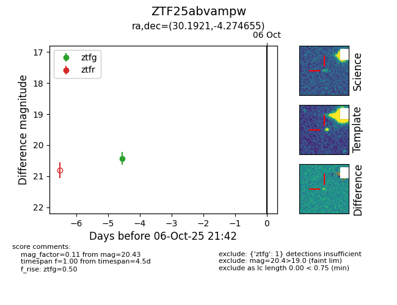

FINK: ZTF25abvampw
Lasair: ZTF25abvampw
ALeRCE: ZTF25abvampw
ZTF25abvampw (ztf,fink)
equatorial (ra, dec) = (30.1921,-4.27465)
galactic (l, b) = (161.8667,-61.78742)

last ztfg=20.43
1 ztfg detections